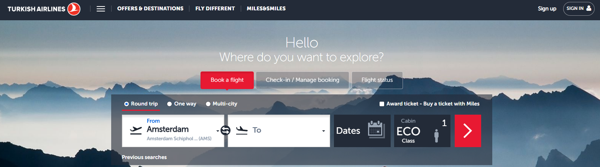
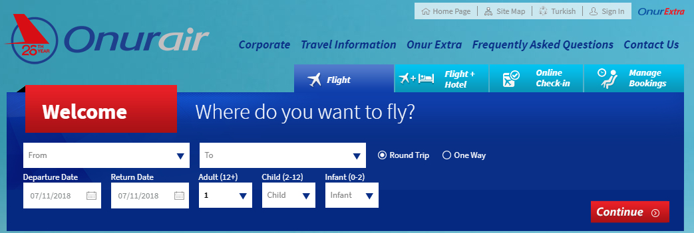
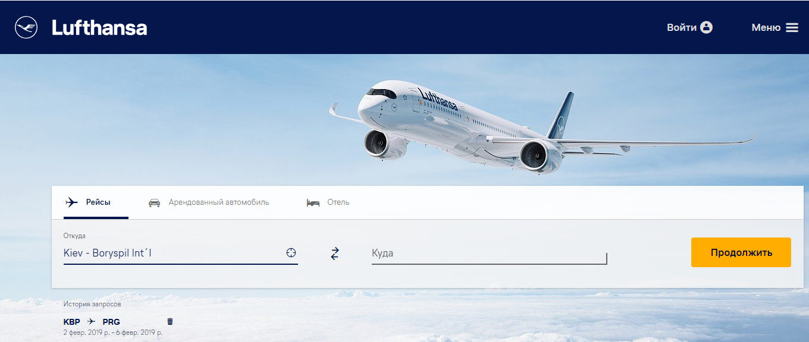
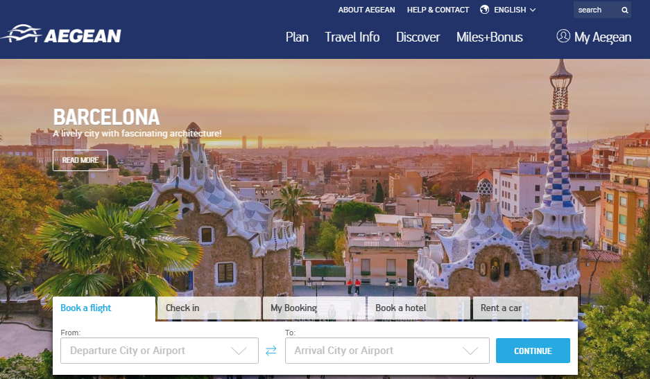
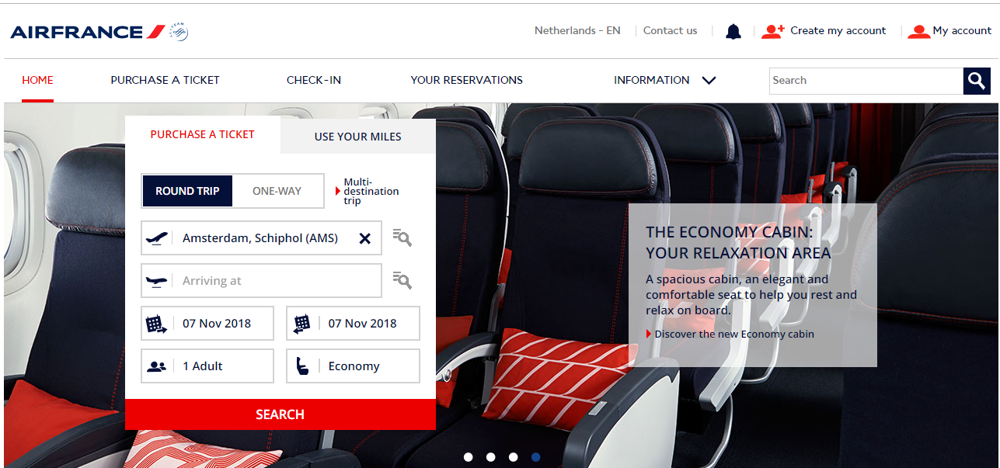
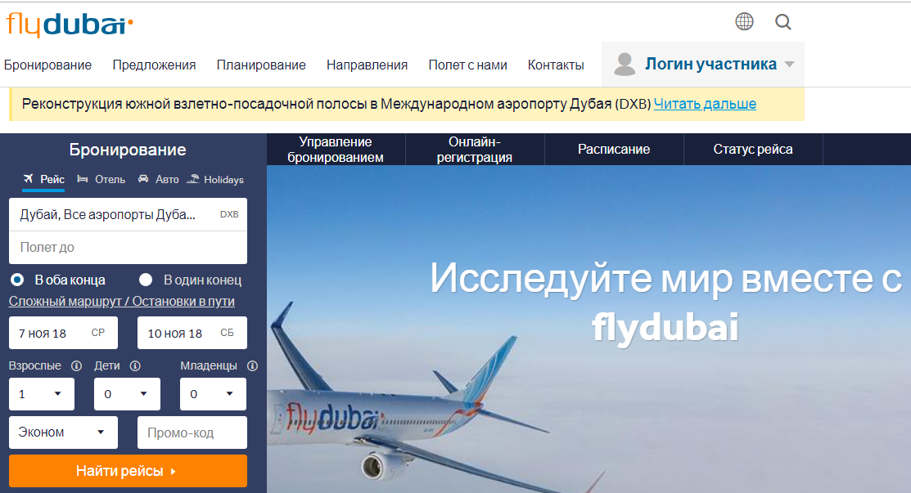

Громадяни України, які планують подорожувати до інших країн світу ( в даному випадку – Туреччина, Польща, Молдова) офіційну інформацію щодо документів, які потрібні для в’їзду в інші країни, а також щодо митних правил можуть дізнатися на офіційному сайті Міністерства закордонних справ України - https://mfa.gov.ua/ua.
Туреччина - http://tripadvisor.mfa.gov.ua/?p=1055
Режим в’їзду: Безвізовий до 90 днів протягом 180 днів при наявності закордонного паспорту. Окрім документів для виїзду за кордон, громадяни України можуть в’їжджати до Туреччини за ID-карткою.
Митні правила: Іноземець може ввезти в країну:
тютюнову продукцію (для осіб у віці старше 18 років): 200 сигарет, 5 сигаріл (кожна вагою не більше 3 г), 10 сигар, 200 грамів тютюну та 50 грамів жувального тютюну,
алкогольні напої (для осіб у віці старше 18 років): 1 пляшка об’ємом 1 літр або 2 пляшки по 0,7/0,75 л. вина чи інших алкогольних напоїв;
п’ять флаконів парфумів не більше ніж 120 мл кожен;
подарунки вартістю не більше 300 євро;
особисті речі, медикаменти, необхідні для особистого використання;
1 кг кави, 500 грамів чаю, 1 кг шоколаду, 1 кг продукції з цукру;
Грошові кошти в еквіваленті до 5000 дол. США без декларування
Заборонені до ввезення:
вогнепальна зброя та боєприпаси;
фармацевтична продукція;
наркотичні речовини;
м’ясна та молочна продукція;
радіоактивні речовини.
Іноземець має право вивезти:
не більше 2 кг (3 блоки) тютюну місцевого виробництва, 5 кг алкогольних напоїв (12 пляшок алкоголю місцевого виробництва);
харчову продукцію загальною вартістю не більше 100 тур. лір, вагою не більше, ніж по 5 кг;
подарунки вартістю не більше 5000 тур. лір, а якщо більше – за умови пред’явлення підтвердження обміну валюти на суму понад 5000 лір;
Заборонені до вивезення (в великих кількостях):
антикварна продукція;
зернова продукція;
чай;
какао;
кава;
спеції.
Авіасполучення
Туреччина останнім часом активно розвиває географію польотів, особливо в Україні. Турецькі перевізники Turkish Airlines, Pegasus Airlines, Onur Air буквально захопили всі можливі аеропорти в Україні. З Києва щодня виконується від 2 до 4 рейсів в Стамбул і Анкару. Завдяки конкуренції між МАУ і Turkish Airlines можна завжди знайти дешеві авіаквитки на прямі рейси.
Крім того, сьогодні в Стамбул і в Анкару можна придбати дешеві авіаквитки на прямі рейси з Харкова, Львова, Одеси, Запоріжжя і навіть Херсона. Турецькі лоу-кости Pegasus Airlines та Onur Air пропонують ціни в два рази дешевше, ніж МАУ і Turkish Airlines на рейси з Києва. А також вони гарні своїми стикувальними рейсами.
Багато рейсів пропонує українська авіакомпанія МАУ. Шодня з Києва до Стамбулу відправляються 2-3 рейси цієї авіакомпанії і стільки ж в зворотньому напрямку. Час в польоті – приблизно 2 години.
МАУ пропонує відносно дешеві авіаквитки – від 6953 грн в обидва боки. Але такий рейс не передбачає нявність у пасажирів багажу, лише ручна покладь. В такому випадку за багаж потрібно доплачувати.
Турецький авіаперевізник Turkish Airlines пропонує рейси з багажом (20 кг на особу) від 8291 грн. Рейси виконуються 4 рази на добу. Також обидві авіакомпанії пропонують місця в бізнес класі від 45 522 грн.
Турецький лоукост Pegasus Airlines пропонує рейси з пересадками в Ізмірі від 6589 грн.
Німецький авіаперевізник Lufthansa – рейси з пересадками в Франфурт-на-Майні від 11 654 грн.
Можна також скористатися послугами авіакомпаній Aegean, Airfrance, Fly dubai, BELAVIA, але ці перевізники виконують рейси відносно рідше.
Сайти авіакомпаній, де можна придбати квитки до Туреччини:
1.МАУ - flyuia.com
Turkish Airlines - https://www.turkishairlines.com/

Pegasus Airlines - https://www.flypgs.com/ru
Onur Air - https://www.onurair.com/

Lufthansa -https://www.lufthansa.com/ua/ru/Homepage

Aegean - https://ru.aegeanair.com/

Airfrance - https://www.airfrance.ua/ru
Fly dubai - https://www.flydubai.com/ru/

BELAVIA - https://belavia.by/
Морське сполучення
Компанія Укрферрі в квітні минулого року запустила регулярне морське сполучення між Чорноморськом (біля м. Одеси) та морським вокзалом в Стамбулі – Хайдирпаша. На регулярній лінії Чорноморськ (Україна) - Хайдарпаша (Туреччина) до перевезення приймаються пасажири, а також вантажні і легкові автомобілі, техніка на гусеничному ходу, палубні вантажі, контейнери.
Середній час морського переходу з порту Чорноморська в порт Хайдарпаша - 27 годин. Навігація здійснюється цілий рік 5 разів на місяць.
Пароми, що працюють на даних лініях знаходяться під постійним наглядом і оглядом всесвітньо визнаних міжнародних класифікаційних товариств - членів Міжнародної Асоціації Класифікаційних Товариств (МАКО): Німецького Ллойда і Ллойдс Реджистер і відповідають суворим вимогам безпеки мореплавства, що пред'являються класифікаційним товариством, державою прапора і відповідними міжнародними конвенціями.
Вартість такої подорожі в двомісній стандартній каюті (двоповерхове ліжко, душова кабіна) – 95 доларів з людини, тобто 190 – з двох. Це відносно дороще ніж авіа перельоти, але як плюс можна назвати трьохрахове харчування на борту, яке входить в вартість і можливість перевезти до 100 кілограм зареєстрованого багажу.
Придбати квитки на такий паром можна в офісі компанії Укрферрі за адресою м. Одеса, пров. Сабанський, 4а або на офіційному сайті компанії - http://www.ukrferry.com/